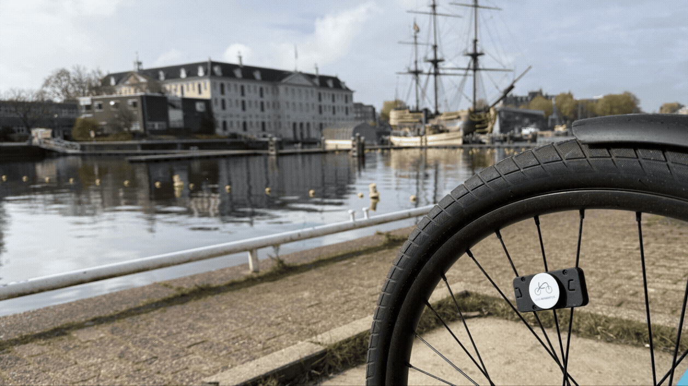

This dashboard is designed for officials and urban planners within the Municipality of Amsterdam to demonstrate the potential of cycling-behaviour-informed policy planning.
It combines self-collected cycling sensor data (speed and road quality) with aggregated road segment analysis.
The map visualises Amsterdam's cycling network using selectable data layers. Each layer has its own scale, legend, and policy interpretation.
Displays average cycling speed across recorded trips, supporting the identification of slow or fast corridors.
Trips are recorded two ways: some are uploaded from the sensor's own CSV export, others are fetched from the sensor via the API. CSV trips measure speed directly from wheel rotation, which is precise. API trips measure speed via GPS, which is inherently noisier — especially between Amsterdam's tall buildings. To keep the map readable, API-sourced trips are shown with a lightly smoothed speed value on the line color only. Every number elsewhere on the dashboard — trip stats, click-to-inspect speeds, braking detection — always uses the raw, unsmoothed measurement.
Based on third-party infrastructure data, categorised from "Perfect" to "No road", supporting infrastructure assessment and maintenance planning.
Aggregates speed and road quality into averaged scores per road segment, supporting corridor-level analysis.
Within the averaged road segments, you'll see a subfilter which combines infrastructure condition and cycling performance into a single indicator for comparative assessment.
Flags locations where a cyclist decelerated suddenly, accumulated across all recorded trips. Braking is detected when a cyclist decelerates at more than 5 km/h per second. This threshold was chosen to distinguish genuine sudden braking (e.g. at intersections, obstacles, or unsafe road conditions) from normal slowdowns. For GPS-sourced trips, brief segments (below a minimum time span) are excluded from braking detection, since GPS position noise over very short windows can otherwise look like extreme deceleration that never actually happened.
A "g" is a unit of acceleration equal to Earth's gravity (9.8 m/s²)— the standard way to measure impact force.
An incident is flagged when the accelerometer registers a sharp impact of 6g or greater. Because potholes, rough terrain, and other everyday jolts can also produce a brief spike above that threshold, a raw impact reading isn't treated as a confirmed crash until it passes three independent checks:
1. The bike actually stops. Within 3 seconds of the impact, the sensor readings must settle into a narrow band (varying by no more than 3g) for at least 1 continuous second, and GPS must confirm the bike stopped moving— its reported speed dropping near zero and its position staying put— for that same stretch. Both signals have to agree; if either keeps showing motion or vibration, the spike is treated as normal riding activity (e.g. hitting a pothole and continuing to ride).
2. The wheel actually stalls. Separately from the accelerometer/GPS check above, the system watches the wheel's own rotation for a stall— the point where it stops turning and, if the bike gets back underway, resumes. If that recovery takes longer than 120 seconds, the event is treated as a parking artifact (e.g. the bike being walked, lifted, or left standing) rather than a crash, and is rejected even if the first check passed.
3. The bike was actually moving beforehand. The system looks back up to 10 seconds before the impact to confirm the bike was in motion. This catches cases where a stationary or parked bike gets knocked, dropped, or otherwise jolted— a genuine impact reading, but not a riding crash— and excludes it from the count.
Confirmed incidents are described using three independent dimensions: impact intensity (Minor, Hard, or Severe), accident type (Stationary Fall, Low-Speed Fall, High-Speed Fall, or Unclassified), and outcome (Resolved or Unresolved). Impact intensity is derived from peak_g, the peak absolute lateral acceleration during the impact, where 'minor' is < 8 g, 'hard' is 8–11 g, and 'severe' is > 11 g. Accident type is based on the bike's estimated wheel speed immediately before impact. Outcome describes whether the bike resumes after the stop; an unresolved incident is one where the wheel does not resume during the recorded route.
Filters can be activated individually or in combination. Each combination reflects a deliberate analytical perspective chosen by the user.
The dashboard does not prescribe a single interpretation, but supports exploratory, policy-driven analysis.
Behavioural indicators should be understood as signals rather than definitive diagnoses. Results should be interpreted alongside contextual knowledge of street design, traffic conditions, and policy objectives.
